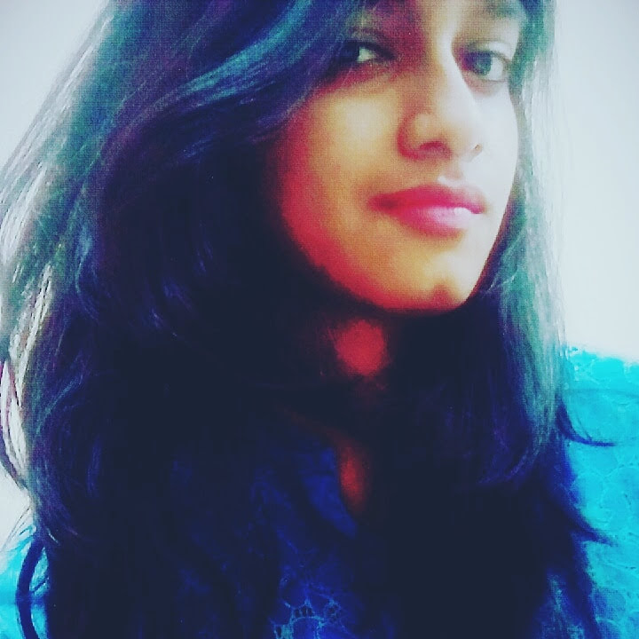
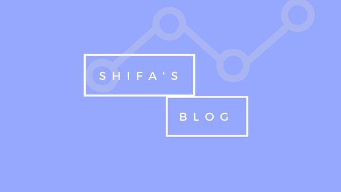

<!DOCTYPE html>
<html>
    <head>
        <title>Shifa Samreen</title>
        <meta charset="UTF-8">
        <meta name="viewport" content="width=device=width, initial-scale=1.0">
        
        <link href="https://fonts.googleapis.com/css?family=Lustria" rel="stylesheet">
        
        <!-- ---------------CSS LINK------------------- -->
        <link rel="stylesheet" type="text/css" href="main.css">
        
    </head>
    
</html>


<body>
   
   <!--The div class wrapper allows to have spacing on the sides for our design-->
    
    
       
       <div class="first-section">
          
          <!--To have floating elements in the navigation clearfix class is used.-->
            <div class="wrapper">
             <div class="nav-top">
                 
             </div>
              <!--~~~~~~~~~~~~~~ NAVIGATION~~~~~~~~~ -->
               <nav class="clearfix">
                  
                  <p class="myName">Shifa Samreen</p>
                  
                  <!--improve upon this later to add navigation after uploading 'stuff'-->
                  <!--<div class="nav-div">
                  <a href="#">Art</a>
                  <a href="#">Blog</a>
                  <a href="#">Contact</a>
                  </div> -->

               </nav> 
                 
               <!--~~~~~~~~~~~~~~~~~~~~MAIN CONTENT~~~~~~~~~~~~~~ -->  
               <div class="main-content-container">
                   
                    <div class="mcc-empty-space">

                    </div> 
                    <div class="mcc-main-space">


                       
                       
                       <div class="mcc-ms-sec2">
                          <p> Hi! I am Shifa, a software devloper with a knack for design and creativity. I design interfaces when I am not programming, painting, travelling, or eating.
                           I am interested in human-computer intercation, computer vision, and machine learning.
                              I also have a keen interest in world polity and enjoy debating and public speaking.</p>
                              <div class="lines"></div>
                       </div>
                       <div class="logos-line" >
                           <a href="https://www.linkedin.com/in/shifasamreen/"></a>
                           
                           <a 
                           href="mailto:ssamreen@acm.org"></a>
                           
                           <a href="https://github.com/shifasamreen"></a>
                           
                           <a href="https://www.behance.net/shifasamre4dfb"> </a>
                           
                           <a href="https://www.facebook.com/shifa.samreen.7"></a>

                       </div>

                   </div>
           
                </div>
             </div>
           
           
       </div>
       
       
       <div class="last-section">
           <div class="sub-slides-container">
               
           
           <div class="sub-slide">
             
              <div class="sub-slide-1">
                
                 <div class="sub-slide-bg-1">
                     <!---->
                 </div>
                  
                <div class="sub-slide-card-1">
                    <a href="https://medium.com/shifa-samreen"> </a>
                
                <!-- -->
                   
                </div>
                    
              </div>
              
              <div class="sub-slide-2">
                  <div class="extra"></div>
                  
                  <div class="text1">
                      
                      <p> I sometimes write about my experiences, thoughts and projects. Read my blog on medium and feel free to leave a comment or email a feedback. 
                      </p>
                      
                      <div class="lines"></div>
                      
                  </div>
                  
                  <div class="extra"></div>
                  
              </div>
              
           </div>
           
           <div class="sub-slide">
            
             <div class="sub-slide-2-2">
                  <div class="extra"></div>
                  
                  <div class="text2">
                      
                      <p> I am open to take up challenging projects, contribute to social organizations and collaborate over ideas. Reach out to me by email for any such requests.
                      </p>
                      
                      <div class="lines"></div>
                      
                  </div>
                  
                  <div class="extra"></div>
                  
              </div>
             
             <div class="sub-slide-1-2">
                
                 <div class="sub-slide-bg-1-2">
                     <!---->
                 </div>
                 
                <div class="sub-slide-card-1-2" > 
                <!-- -->
                
                <a href="mailto:shifasamreen24@gmail.com"></a>
                
                </div>
                    
              </div>
              
              
              
           </div>
              
           </div>
    </div> 
           
       
       <footer class="footer">
           <p> &copy; 2018 Shifa Samreen</p>
       </footer>
         
    
</body>